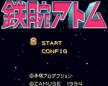

Tetsuwan Atom - SNES Games

- Company: Banpreston/Zamuse
- Date Released: 1994
- Price (in yen): 9000
- Genre: Platform game
Controls
- A button: Jump/Flip while Flying
- B button: Punch
- X button: Activate Jets
- Y button: Fly Horizontally
- L button: Activate Jets
- R button: Activate Jets
- Start: [not used?]
- Select: Pause
Anime Video Game Resource Center © 1998 by Luis A. Cruz